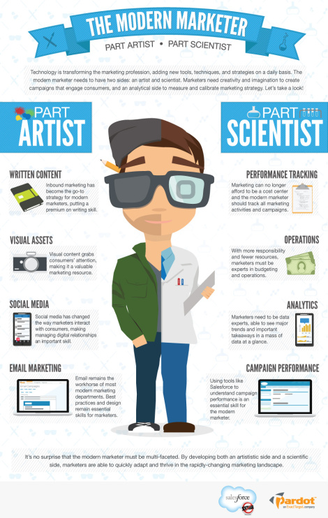
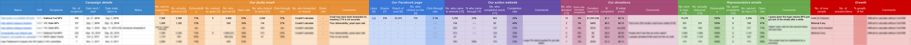
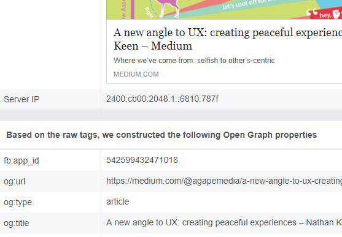
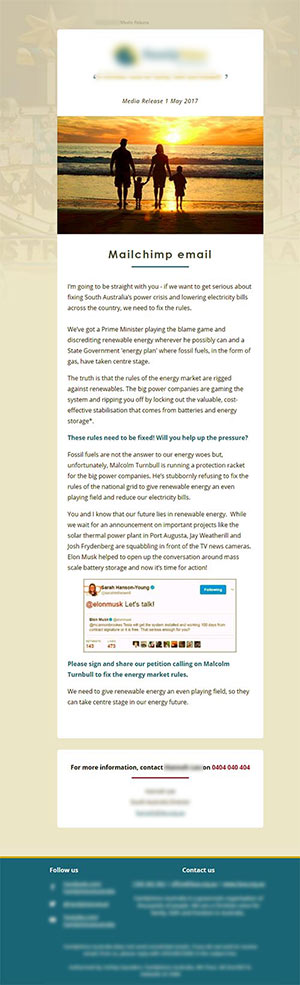

<!DOCTYPE html><html><head><title>Portfolio of Nathan Keen</title><meta charset="utf-8"><meta name="viewport" content="width=device-width, initial-scale=1, shrink-to-fit=no"><link rel="apple-touch-icon" sizes="180x180" href="/apple-touch-icon.png"><link rel="icon" type="image/png" sizes="32x32" href="/favicon-32x32.png"><link rel="icon" type="image/png" sizes="16x16" href="/favicon-16x16.png"><link rel="manifest" href="/manifest.json"><link rel="mask-icon" href="/safari-pinned-tab.svg" color="#5bbad5"><meta property="og:title" content="Nathan Keen's Portfolio"><meta property="og:image" content="images/logo-NK-1xxhdpi.png"><meta property="og:description" content="UX/UI web designer"><meta property="og:url" content="www.nathankeen.id.au"><meta name="theme-color" content="#ffffff"><link rel="stylesheet" href="https://maxcdn.bootstrapcdn.com/bootstrap/4.0.0-beta.2/css/bootstrap.min.css" integrity="sha384-PsH8R72JQ3SOdhVi3uxftmaW6Vc51MKb0q5P2rRUpPvrszuE4W1povHYgTpBfshb" crossorigin="anonymous"><link rel="stylesheet" href="css/fontawesome.css"><link rel="stylesheet" href="css/layout.css"></head></html><body id="top" data-spy="scroll" data-target="#navbot" data-offset="0"> <div class="container"><header><h1>Marketing creative + tech</h1></header><section><div class="row vertcentre"><div class="col-md-6"><h2 class="anchor" id="tech">What does marketing look like today?</h2><p class="text-muted"></p><p>I'd say there are about three main categories in marketing: the tech, the creative, and the writer.</p><p>This is different from what Pardot and Salesforce say (image right). </p><p>What I'm saying is that it's usually a different person that can speak really well, is witty and the life of the party, to the visual designer. </p><p>So the modern marketer, in their words is "part scientist", "part artist", and "part linguist".</p><p>As to me, <strong>I can fulfill the scientist and artist roles</strong>, but I'm not a great wordsmith.</p></div><div class="col-md-6"><figure><figcaption class="figure-caption text-center"></figcaption></figure></div></div></section><div class="row justify-content-center"><div class="col-md-10 col-xl-8"><h4>My scientific/tech marketing experience</h4><p>At my last NFP, I constructed a full range of stats on our email & website campaigns.</p><div class="horizontalimage"><figure><figcaption class="figure-caption text-center">Stats from just one part don't cut it! This shows full end-to-end statistics from email to website to action</figcaption></figure></div><p>The data was pulled from Sendgrid, Facebook, Google Analytics, websites and Postmark.</p><p>I worked closely with our social media guru, fixing up the Facebook titles, content, and images of links shared through <code>og meta</code> tags, and force refreshing of data using the 'Sharing Debugger' tool.</p><figure><figcaption class="figure-caption text-center">Analysing how Facebook will view my Peaceful UX post</figcaption></figure><p>I could force a particular title or image despite what the CMS defaults wanted, and do this without hardcoding it (which might interfere with other pages). </p><p>Being tech support for emails (& everything!), I also have experience with:</p><ul><li><strong>Troubleshooting deliverability issues</strong>, by checking spam scores; reasons for bounces; SPF, DKIM and MX records</li><li><strong>Integrating email systems</strong>, such as with the CRM, or other database (not custom integrations, but utilising tools like Zapier or syncing tools)</li><li><strong>Embedding social media</strong> onto websites so the latest piece(s) are showing</li></ul><h4 id="design">My artistic marketing experience</h4><p>Email software is notorious for displaying HTML emails badly.</p><p>I can't say I know every nuance of every software provider (who would?), but I can test how my email would look in 99% of them with Litmus. </p><p>I can create custom HTML email templates, or to cut costs, customise pre-made templates. </p><p>This is one that I've designed:</p><figure><figcaption class="figure-caption text-center">Responsive email template</figcaption></figure><p>I'm familiar with templates that work well with such tools as Mailchimp, where you can tag certain sections to repeat, or be removed. This means you can easily change the look of a campaign, based on only the sections you want.</p><h4>The toolset</h4><p>I'm thoroughly familiar with many, many tools such as:</p><ul><li>Litmus for <strong>testing email designs</strong>, broken links and so on</li><li>Marketing <strong>Automation</strong> tools such as Autopilot & Drip</li><li>Marketing campaign tools such as <strong>Mailchimp & SendGrid</strong>, and utilising more than the standard features such as Mailchimp's <strong>A/B Split Testing</strong> and <strong>segmentation</strong></li><li>Analytical tools such as <strong>Google Analytics</strong> and those within email sending software such as SendGrid, Postmark</li><li><strong>Transactional email</strong> delivery tools like Postmark</li><li>Advertising tools such as <strong>Google Adwords & Facebook Ads</strong></li><li>Social media tools like <strong>Hootsuite</strong></li><li>Website <strong>live chat tools</strong> like tawk.to</li><li>Web design tools to edit <strong>responsive, HTML emails</strong></li></ul><p>I am familiar with <em>hundreds</em> of applications, so learning something new isn't a challenge. In fact, I am usually able to help someone in a program they've used for years, but I've never seen before (having worked in small organisations, I'm always the tech support). </p></div></div></div><nav class="navbar navbar-expand navbar-dark fixed-top bg-dark" id="navtop"><button class="navbar-toggler" type="button" data-toggle="collapse" data-target="#navbarCollapse" aria-controls="navbarCollapse" aria-expanded="false" aria-label="Toggle navigation"><span class="navbar-toggler-icon"></span></button><div class="collapse navbar-collapse" id="navbarCollapse"><ul class="navbar-nav mr-auto"><li class="nav-item"><a class="nav-link" href="/">Home</a></li><li class="nav-item dropdown"><a class="nav-link dropdown-toggle" href="#" id="dropup2" data-toggle="dropdown" aria-haspopup="true" aria-expanded="false">Portfolio</a><div class="dropdown-menu" aria-labelledby="dropup2"><a class="dropdown-item" href="/portfolio-RedCupCafe2017.html">Red Cup Cafe 2017</a><a class="dropdown-item" href="/portfolio-NatWild2017.html">Naturally Wild 2017</a><a class="dropdown-item" href="/portfolio-InformationArchitecture.html">Information Architecture</a><a class="dropdown-item" href="/portfolio-Marketing.html">EDM + Marketing</a><a class="dropdown-item" href="/portfolio-2018.html">Agile + Portfolio 2018</a></div></li><li class="nav-item"><a class="nav-link" href="/work-experience.html">Work XP</a></li></ul><span class="badge badge-warning">Beta</span></div></nav><footer class="bg-info text-white"><div class="container"><div class="jumbotron"><div class="row"><div class="col-sm-6"><ul class="nav flex-column"><h4>UI</h4><li class="nav-item"><a class="nav-link" href="/portfolio-RedCupCafe2017.html#Proto">Red Cup Cafe's UI</a></li><li class="nav-item"><a class="nav-link" href="/portfolio-NatWild2017.html#UI">Naturally Wild's UI</a></li><li class="nav-item"><a class="nav-link" href="https://github.com/nathankeenmelb/nk-portfolio">This portfolio's UI (Github)</a></li><li class="nav-item"><a class="nav-link" href="https://codepen.io/nathankeenmelb">JavaScript (Codepen)</a></li><li class="nav-item"><a class="nav-link" href="/portfolio-Marketing.html#design">Email design</a></li><h4>UX</h4><li class="nav-item"><a class="nav-link" href="/portfolio-RedCupCafe2017.html#UX">Red Cup Cafe's UX</a></li><li class="nav-item"><a class="nav-link" href="/portfolio-NatWild2017.html#UX">Naturally Wild's UX</a></li><li class="nav-item"><a class="nav-link" href="https://medium.com/@agapemedia/a-new-angle-to-ux-creating-peaceful-experiences-6d7ec8d286ff">A new angle to UX: creating peaceful experiences (Medium)</a></li><li class="nav-item"><a class="nav-link" href="https://medium.com/@agapemedia/how-to-create-a-peaceful-user-experience-f51ec0090240">How to create a peaceful User Experience (Medium)</a></li><h4>IA</h4><li class="nav-item"><a class="nav-link" href="/portfolio-NatWild2017.html#IA">Naturally Wild's IA</a></li><li class="nav-item"><a class="nav-link" href="/portfolio-InformationArchitecture.html">Email, Evernote, &amp; my 6th sense</a></li></ul></div><div class="col-sm-6"><h4>Contact Nathan</h4><p>Phone: <a href="tel:+61405990801">0405 990 801</a></p><p>Email: <a href="javascript:location='mailto:\u006e\u0061\u0074\u0068\u0061\u006e\u0040\u0061\u0067\u0061\u0070\u0065\u006d\u0065\u0064\u0069\u0061\u002e\u0063\u006f\u006e\u0073\u0075\u006c\u0074\u0069\u006e\u0067';void 0"><script type="text/javascript">document.write('\u006e\u0061\u0074\u0068\u0061\u006e\u0040\u0061\u0067\u0061\u0070\u0065\u006d\u0065\u0064\u0069\u0061\u002e\u0063\u006f\u006e\u0073\u0075\u006c\u0074\u0069\u006e\u0067')</script></a></p><p>LinkedIn: <a href="https://www.linkedin.com/in/nathankeenmelbourne/">linkedin.com/in/nathankeenmelbourne/</a></p></div></div></div></div></footer><script src="https://ajax.googleapis.com/ajax/libs/jquery/3.2.1/jquery.min.js"></script><script src="https://cdnjs.cloudflare.com/ajax/libs/popper.js/1.12.9/umd/popper.min.js" integrity="sha384-ApNbgh9B+Y1QKtv3Rn7W3mgPxhU9K/ScQsAP7hUibX39j7fakFPskvXusvfa0b4Q" crossorigin="anonymous"></script><script src="https://maxcdn.bootstrapcdn.com/bootstrap/4.0.0-beta.2/js/bootstrap.min.js" integrity="sha384-alpBpkh1PFOepccYVYDB4do5UnbKysX5WZXm3XxPqe5iKTfUKjNkCk9SaVuEZflJ" crossorigin="anonymous"></script><script src="/js/custom.js"></script></body>